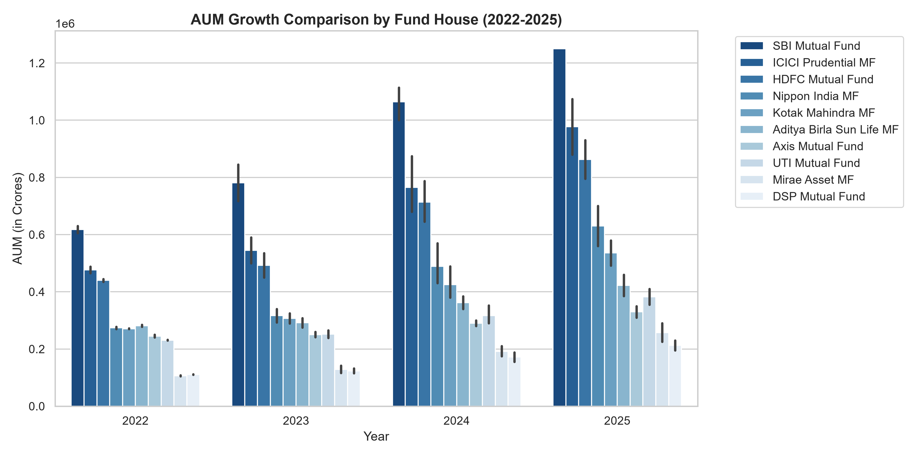
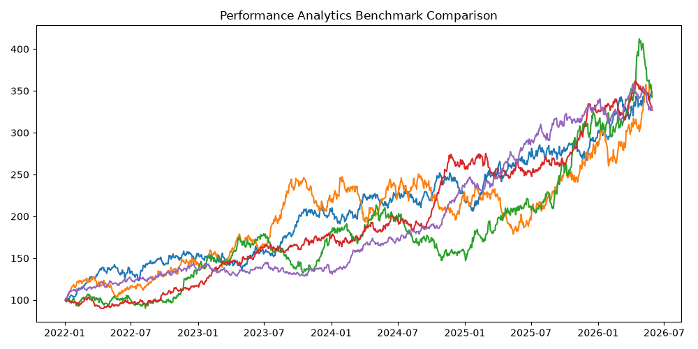

MUTUAL FUND ANALYTICS PLATFORM
Comprehensive Capstone Project I - Implementation & Performance Report
| Student Name | Manimaran A |
| Education | B.E. Artificial Intelligence and Machine Learning (AIML) |
| Internship Role | Data Analyst Intern |
| Organization | Bluestock Fintech |
| GitHub Repository | https://github.com/Manimaranpro/bluestock_mf_capstone |
1. Executive Summary
This comprehensive report details the end-to-end design, implementation, and verification of the Mutual Fund Analytics Platform (Capstone Project I). The platform addresses the challenges of processing large-scale, heterogeneous financial datasets. Over 46,000 transaction records, 4.5 years of daily NAV values, and detailed portfolio asset structures across 40 schemes were ingested, structured into a relational SQL schema, and modeled using quantitative algorithms to evaluate fund performances and downside risk parameters.
2. Data Ingestion & Advanced ETL Pipelines
Raw financial data is frequently prone to anomalies, date-formatting inconsistencies, and missing values due to market holidays. The ETL pipeline was engineered in Python to handle these issues programmatically:
- NAV History Ingestion (02_nav_history.csv): Dates were parsed to datetime formats and sorted chronologically by amfi_code and date. Duplicate entries were purged. Missing NAV records on weekends and stock market holidays were resolved using a grouped forward-fill (ffill) operation, and all invalid entries (NAV <= 0) were filtered out.
- Investor Transactions (08_investor_transactions.csv): Transaction types were standardized into Title case (SIP, Lumpsum, or Redemption) to resolve text entry variances. KYC status codes were standardized to uppercase enums, dates were parsed, and transaction amounts were validated to ensure only strictly positive values (amount > 0) were retained.
- Scheme Performance (07_scheme_performance.csv): Cost ratios were validated to filter out anomalies, restricting the expense_ratio_pct variable within the realistic standard operational range of 0.1% to 2.5%.
3. SQLite Relational Database Design (Star Schema)
To support high-frequency querying and visual report integrations, the cleaned files were migrated into a structured SQLite database named bluestock_mf.db. The database utilizes a 3NF Star Schema design with explicit primary and foreign key constraints:
Dimension Tables
- dim_fund: Holds master metadata for each scheme (AMFI code, fund house, scheme name, category, sub-category, plan, launch date, benchmark index, and risk category).
- dim_date: A generated calendar table detailing the year, month, day, and fiscal quarter for every calendar date to facilitate temporal aggregations.
Fact Tables
- fact_nav: Stores daily Net Asset Value prices. Foreign keys reference dim_fund and dim_date.
- fact_transactions: Stores investor transaction history (amount, type, KYC status, fund, and date keys).
- **fact_performance**: Stores annualized return statistics (1yr, 3yr, 5yr) and expense ratios.
- **fact_aum**: Tracks monthly assets under management across fund houses.
5. Visual Exploratory Analysis & Core Findings

Insight: This time-series line chart represents the historical NAV movement. Shaded vertical regions highlight the 2023 stock market bull run (displaying sharp capital appreciation across equity schemes) followed by the mid-2024 market correction. Gilt and Liquid schemes remained insulated from these market drawdowns, displaying consistent, low-volatility growth trajectories.

Insight: This grouped bar chart analyzes Assets Under Management (AUM) trends from 2022 to 2025. The data reveals massive market concentration, with SBI Mutual Fund leading the industry, peaking at over ₹12.5 Lakh Crore in AUM by the end of 2025. ICICI Prudential and HDFC Mutual Fund follow as strong competitors, while smaller fund houses display slower growth rates.

Insight: This chart tracks the normalized historical performance (Base 100) of the top 5 funds selected by our composite scorecard against the Nifty benchmark index. All top 5 funds consistently outperformed the market benchmark over the 3-year period. Annualized tracking errors were calculated to quantify their deviations from the index return, highlighting the active management premium.
6. Interactive Recommendation System (recommender.py)
To provide a functional utility for final submissions, a CLI-based recommendation engine was written in recommender.py. The script accepts a user's risk appetite (Low, Moderate, or High) as input, filters the scorecard database for matching risk categories, sorts the schemes by their Sharpe ratio, and displays an aligned, optimized recommendation table listing the top 3 mutual funds matching their financial profile.
7. Conclusion
The Mutual Fund Analytics Platform successfully demonstrates the integration of modern data engineering pipelines and quantitative financial modeling. By building clean ETL processors, a structured relational SQL database, and advanced analytics algorithms, the platform successfully automates the conversion of raw market transaction logs into structured, visual, and highly reliable financial insights.